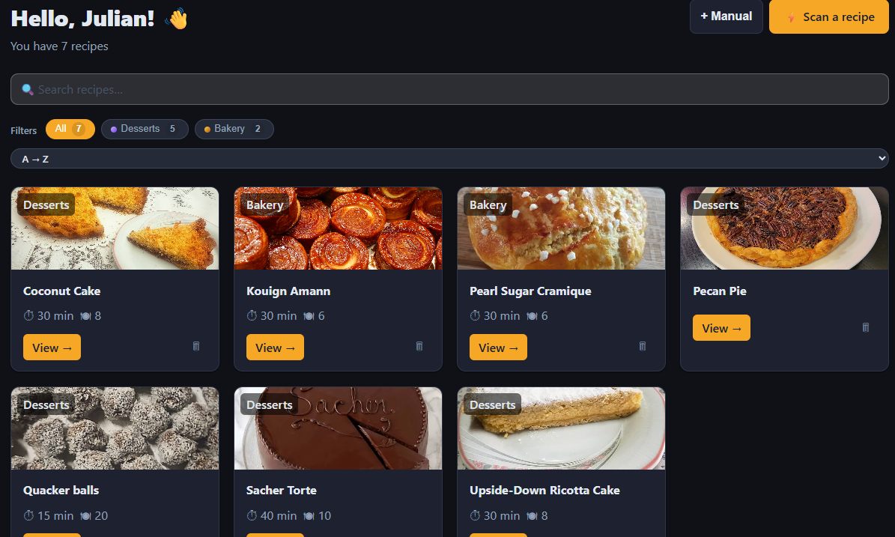
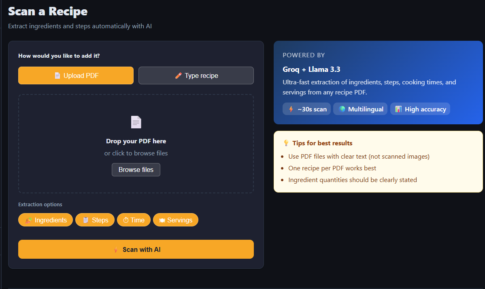
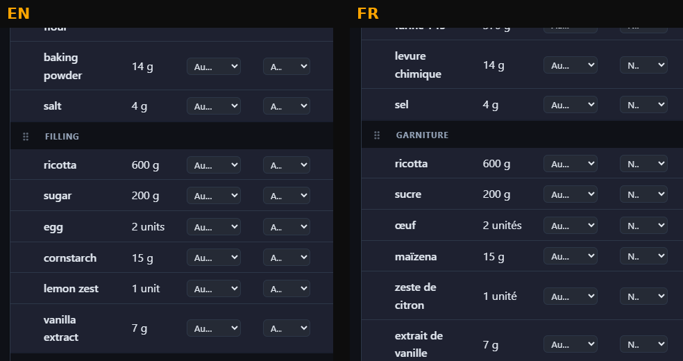
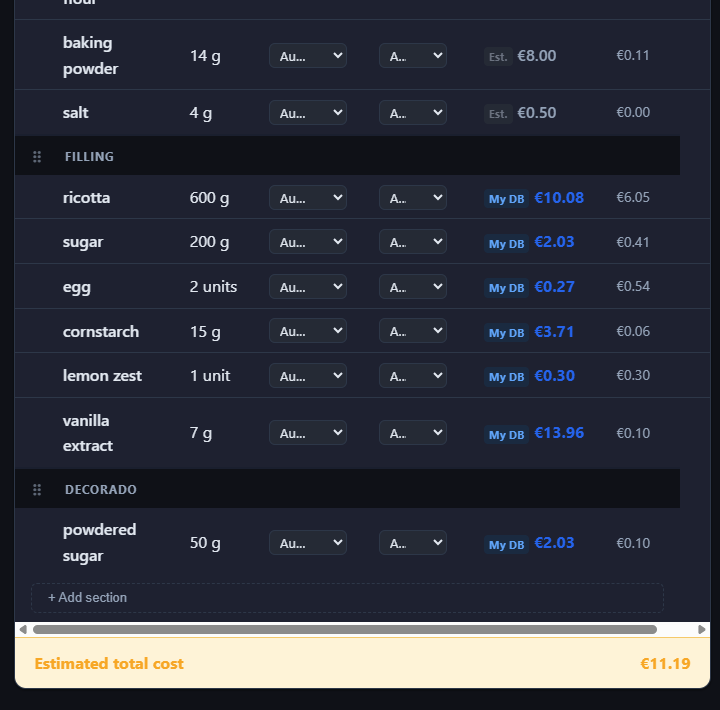

Upload a PDF and get a fully structured recipe — ingredients, steps, prep time, and cost estimates — available in English, Spanish, and French.

Features
Three core features that turn a PDF file into a fully managed, costed, multilingual recipe.

Upload any text-based recipe PDF. Llama 3.3 extracts the title, all ingredients with quantities and units, every preparation step, servings, and cooking time — structured and ready to use in seconds.

Every recipe is automatically translated to English, Spanish, and French using DeepL. Ingredient names, steps, title, and description all switch instantly when you change the language — no manual input needed.

The cost calculator resolves ingredient prices from four sources in priority order: your manual prices, custom store and brand entries, Open Food Facts, and smart per-kg fallbacks. Every recipe shows a total cost estimate at a glance.
About the project
I love baking cakes for my friends and family's birthdays. The problem was that every time someone asked me what a cake would cost, I had to sit down and manually research ingredient prices one by one — flour, butter, sugar, everything — just to give them a rough number.
That friction was the spark. I needed a tool that could take a recipe and instantly tell me the total cost, so I could focus on baking instead of spreadsheets.
But the use case grew from there. When I discover a new recipe I've never tried, it's useful to be able to scan it quickly, see the full ingredient list with quantities, get a cost estimate upfront, and even have it translated — all without retyping anything.
RecipeScanner solves all of that. You upload a PDF and it handles extraction, cost estimation, and translation automatically. This is my Portfolio Project for Holberton School, built over 2 months across 9 structured sprints — the project where I learned how to ship something real.
Portfolio Project · Holberton School · 2026